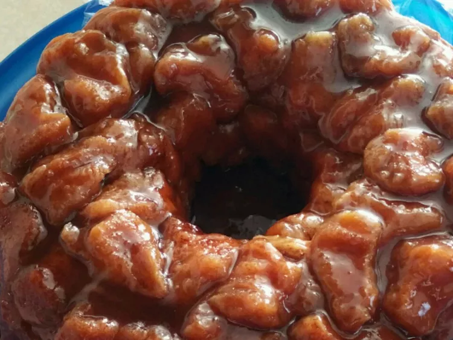

Monkey Bread Recipe

Recipe Description
This is it! The classic monkey bread recipe, oozing with warm caramel
and cinnamon. Monkey bread is irresistible!
Ingredients
- ½ cup granulated sugar
- 1 teaspoon cinnamon
- 2 (16.3 ounce) cans Pillsbury® Grands!® Homestyle refrigerated
buttermilk biscuits
- ½ cup chopped walnuts (Optional)
- ½ cup raisins (Optional)
- 1 cup firmly packed brown sugar
- ¾ cup butter or margarine, melted
Cooking Instructions
- Step 1: Heat oven to 350 degrees F. Lightly grease 12-cup fluted tube pan
with shortening or cooking spray. In large -storage plastic food bag,
mix granulated sugar and cinnamon
- Step 2: Separate dough into 16 biscuits; cut each into
quarters. Shake in bag to coat. Arrange in pan, adding walnuts and
raisins among the biscuit pieces.
- Step 3: In small bowl, mix brown sugar and butter;
pour over biscuit pieces.
- Step 4: Bake 28 to 32 minutes or until golden
brown and no longer doughy in center. Cool in pan 10 minutes. Turn
upside down onto serving plate; pull apart to serve. Serve warm.